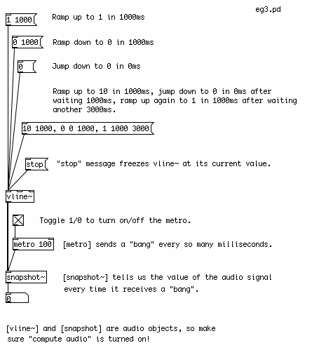

The Envelope Generator
The Envelope of a sound refers to changes in either its pitch or gain over the duration of a note. A gain envelope is the most common, because it is used to synthesize the dynamics of acoustic instruments. For example, a piano has a very sharp or percussive attack, with the note becoming loud quite quickly before gradually fading out. A violin, on the other hand, takes a longer time for the sound to build up as the strings begin to vibrate, and then fades away relatively quickly. A gain envelope has five main characteristics:
- Attack: the length of time it takes the note to reach it's loudest point.
- Decay: the length of time after the Attack it takes the note to reach it's Sustain volume.
- Sustain: the volume of the note which is held until the note is Released.
- Release: the length of time it takes the note to fade to zero after the key on the keyboard has been released.
This is commonly abbreviated as ADSR, and can be drawn graphically like this, where the horizontal axis represents time and the vertical axis represents volume:

An additional parameter which comes from the MIDI world is called Velocity, and it refers to how hard the key of the keyboard has been pressed. In our synthesizer, Velocity will refer to the volume of the note at its loudest point, i.e the peak of the Attack.
Simple Envelope Generator Using [line]
The simplest Envelope Generator can be made using the object [line]. This object takes two numbers, a target and a time (in milliseconds), and interpolates numbers to that target in the time given. If it is sent a single number, the time of the ramp is assumed to be zero, and [line] "jumps" to that value. It remembers that last value that it reached, so the next pair of numbers will start a new ramp from the current value. If a new pair of numbers is sent to [line] while it is still making a ramp, it will immediately stop that ramp and start the new one.

To make a simple up/down, or Attack/Decay envelope, we need to send two different messages to [line]. The first will tell it to go to "1" in a certain amount of time, the second will tell it to go back to "0" in a certain amount of time. These two messages can be triggered with a single "bang" message, as long as we delay the triggering of the second message long enough for the first ramp to finish, using the [delay] object.

Complex Envelope Generator Using [vline~]
A more complex envelope can be created with the [vline~] object. This object can be programmed to make sequences of ramps in order, and with a delay in between them. For example, the message "10 1000, 0 0 1000, 1 1000 3000" would tell [vline~] to do the following:
Ramp up to "10" in 1000ms, then jump to "0" in 0ms after waiting 1000ms (from the start of the ramp), and finally ramp back up to "1" in 1000ms after waiting 3000ms (from start of the ramp).

Because it accepts more complex messages, [vline~] is useful for the traditional Attack/Decay/Sustain/Release envelope. Also, [vline~] is an audio object rather than a numeric object, which means it is more suitable for audio multiplication, as we will see in the next section.

Envelopes Stored In Arrays
For an envelope with an arbitrary curve, a table is the most useful way to go. First we must create a table, by using the Put menu to place and Array in the patch. When we do that, we will see two Properties dialogs appear. In one, we name the Array "envelope" and set a length of 100 units. In the second we can change the graphical appearance and the range of the X and Y axes. In this case, set the X range to "0 to 99", and the Y range to "1 to 0". The size can be anything that is convenient, and is measured in pixels. You can get these Properties dialogs back by Right-clicking or CTL+clicking on the Array. These dialogs appear under the screenshot below.
To read a table, we can use the object [tabread]. The [tabread] object takes a creation argument of the name of the table it is supposed to read. In order to draw inside the table, you should click on the line and drag with the mouse. A value sent to the inlet of [tabread] represents a point on the X axis, and the output is the corresponding value on the Y axis.
If we want to read a table continuously from start to finish, we can use [line] to send a continuous stream of numbers to [tabread], starting with the first position on the X axis of the table ("0"), and ending with the last position ("99"). Remember that [line] takes a pair of numbers, the target ("99", the end of the table) and the time it takes to get there (4000 milliseconds, or 4 seconds). When we want to start over from the beginning of the table, we send a single number, "0", and the [line] object jumps back to it.
In the example below, [tabread] gets values between 0-1 from the table "pitch_envelope". We multiply these numbers by 127 with a [*] (Multiplication) object, to get a MIDI note value between 0-127. After that, we use a [mtof] (MIDI to Frequency) object to convert the MIDI notes into a frequency in Hertz. The frequency is sent to a sine wave oscillator [osc~] object, which sends audio to the [dac~] (Digital to Analog Converter), Pd's connection to the soundcard.